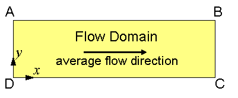
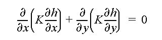
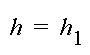
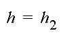
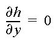
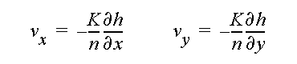
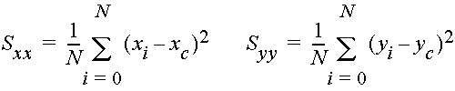
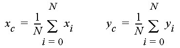
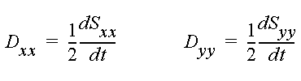

Particle Transport in Steady-State Flow FieldSkip ahead to run the modelIntroductionThe two-dimensional model ParticleFlow simulates flow in a rectangular domain. A key purpose of the ParticleFlow model is to illustrate how heterogeneities in hydraulic properties cause the spatial spreading of fluid particles. This spreading is analogous to macro-scale solute dispersion.  The rectangular flow domain (see above figure) is assumed to be bounded on the left and right sides (AD and BC) by specified head boundaries, and on the top and bottom (AB and DC) by no-flow boundaries. Assuming that the head along AD is higher then the head along BC, the average flow is from left to right. Governing EquationThe steady-state ground-water flow equation to be solved is  where h is hydraulic head, and K is hydraulic conductivity (assumed isotropic), and x and y are the Cartesian coordinates. Boundary ConditionsThe boundary condition along AD is  where h1 is a constant. The boundary condition along BC is  where h2 is also a constant. The boundary condition along AB and DC is  The computer model ParticleFlow solves the above equations by the finite element method. The flow domain is represented by a rectangular mesh composed of square cells, each is divided into two triangular elements. Linear basis functions are used in the finite element formulation. After solving for hydraulic head h, the x and z components of the average interstitial velocity vector are computed by  where n is porosity. The velocity vectors are used for calculating flow paths and the advective movement of fluid particles. In a flow field with nonuniform velocity, a cloud of fluid particles will tend to spread. This spreading can be described by the spatial variance (in the x and y directions) of particle positions, defined as:  where N is the total number of fluid particles, xi and yi are the x and y coordinates of the i-th particle, and xc and yc denote the x and y positions of the center of mass, defined as  If each fluid particle is assumed to carry a fixed amount of solute mass, then particle spreading is analogous to macro-scale solute dispersion. In the macro-dispersion approach, the small-scale variation of velocity is not explicitly simulation. Instead, solute spreading is characterized by a dispersion tensor. The dispersion process is called Fickean if the plot of the spatial variances Sxx and Syy versus time show straight-line relations. In this case, the components of the dispersion coefficients can be estimated by 
|